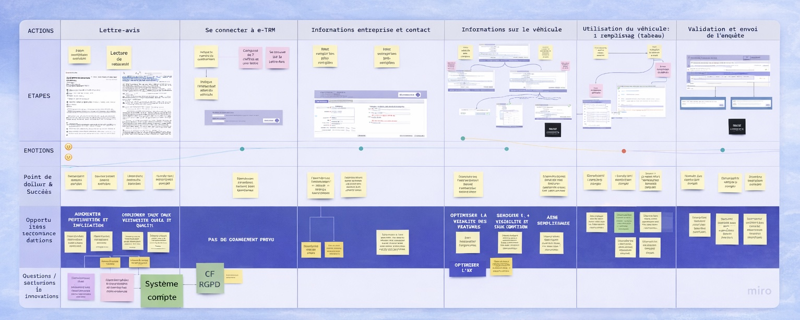

Projet
TRM (Ministère de l'Écologie)Fiabiliser la collecte de données du transport routier
Contexte et objectif
L'outil existant de collecte de données sur le transport routier de marchandises présentait plusieurs limites : les chauffeurs devaient remplir manuellement un questionnaire sur les poids lourds, source régulière d'erreurs de saisie, et les gestionnaires peinaient à vérifier, exploiter et partager les données collectées.
Le besoin dépassait la refonte d'écrans : il s'agissait de repenser le produit dans son ensemble (parcours, structure, profils utilisateurs et bases nécessaires à une future mise en développement) pour poser un cadre plus robuste sur un sujet réglementaire à forts enjeux, en clarifiant à la fois l'expérience des chauffeurs et celle des gestionnaires.
Ma démarche
L’enjeu était de moderniser l’existant tout en construisant une vision produit plus claire, capable de mieux répondre aux usages terrain, de réduire les erreurs de saisie et de fournir une base fiable pour la suite du développement.
Comprendre un écosystème complexe
- Analyse de l’écosystème existant et des parcours actuels
- Étude des données disponibles, des rapports et d’anciens entretiens
- Entretiens utilisateurs complémentaires avec chauffeurs et gestionnaires
- Prise en compte des contraintes réglementaires françaises et européennes
Traduire les besoins en structure produit
- Formalisation des besoins utilisateurs, irritants et opportunités
- Création de personas, experience map, user journey et architecture de l’information
- Conception de prototypes haute fidélité pour les deux interfaces
- Préparation d’une roadmap et d’un backlog pour le futur développement
Préparer une mise en développement plus solide
Le projet ne consistait pas uniquement à produire une nouvelle interface. Il s’agissait aussi de clarifier la structure du produit, les priorités et les risques, afin de rendre les futures décisions plus fiables et le passage au développement plus fluide.
- mieux distinguer les besoins des chauffeurs et ceux des gestionnaires
- rendre les parcours plus compréhensibles et plus cohérents
- fiabiliser les futures décisions produit grâce à un cadrage plus clair
- poser des bases concrètes pour un développement réaliste et priorisé
Les livrables



Les résultats
Résultats produit
Résultats business
La mission a permis de transformer un produit existant difficile à faire évoluer en une vision plus claire, articulée autour d’usages réels, d’interfaces concrètes et d’un cadre produit plus robuste pour la suite du développement.
Ce que j’ai apporté
À la fois une lecture produit, UX et stratégique. Mon rôle a consisté à faire le lien entre les besoins utilisateurs, les contraintes métier, les enjeux réglementaires et la préparation d’un cadre produit exploitable.
Ce projet montre ma manière d’intervenir sur des sujets complexes : partir d’un existant difficile, clarifier les parcours, structurer les priorités et produire des livrables qui servent autant la conception que les décisions à venir.